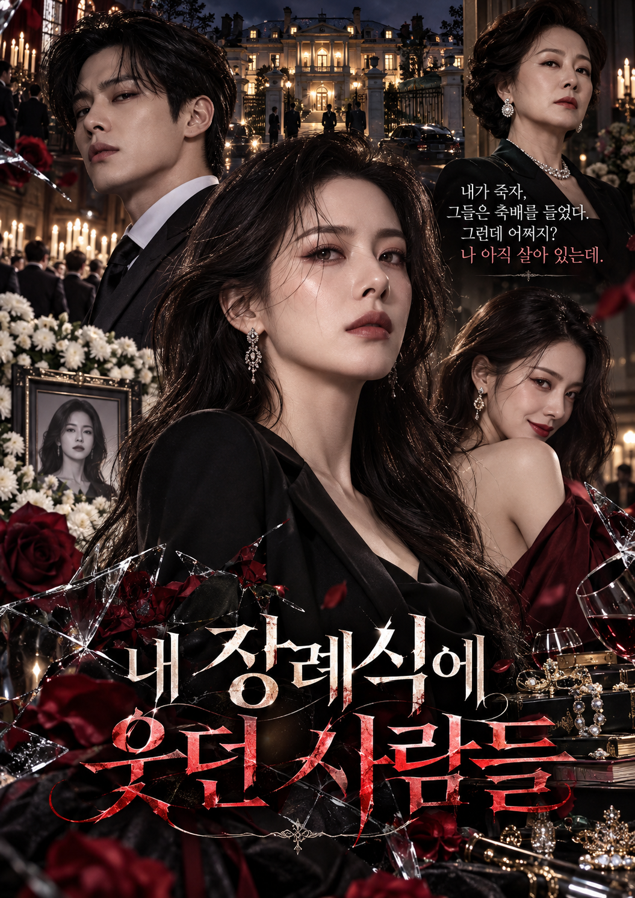

내 장례식에 웃던 사람들
- 막장
- 복수
- 재벌가
- 미스터리
총 16부작
“내가 죽자, 그들은 축배를 들었다. 그런데 어쩌지? 나 아직 살아 있는데.”
작품의 핵심 이야기
대한민국 굴지의 재벌, 태성그룹.
그 집안의 며느리 윤해인은 결혼 7주년 기념 파티에서 남편의 불륜을 알게 된다.
상대는 무려 20년 지기 절친.
그런데 불륜보다 더 충격적인 사실이 밝혀진다.
5년 전 죽었다고 들었던 자신의 아들이 살아 있다는 것.
그 아이는 지금 남편의 내연녀를 엄마라고 부르고 있다.
아이를 되찾기 위해 재벌가의 비밀을 파헤치던 해인은 26년 전 발생한 의문의 화재 사건과 자신이 거액의 상속 재산을 가진 숨겨진 상속인이라는 사실을 알게 된다.
그리고 마침내 누군가 해인을 죽이려 한다.
며칠 뒤, 성대하게 치러진 그녀의 장례식.
시어머니는 웃고, 남편은 다른 여자와 미래를 약속한다.
하지만 장례식장 가장 뒤편에는 모든 것을 지켜보는 한 여자가 있었다.
바로 죽은 줄 알았던 윤해인이다.